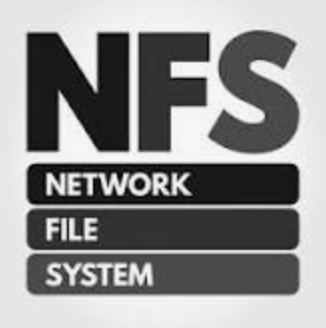
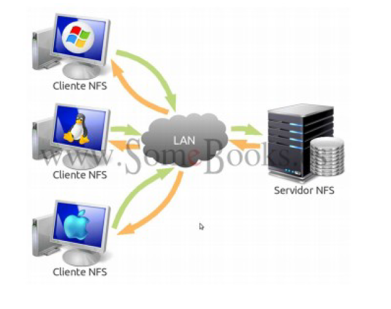

NFS Network File System¶
NFS es un protocolo de nivel de aplicación, El nombre es un poco engañoso "Sistema de Archivos de Red" porque NFS no es el sistema de archivos real, sino el protocolo utilizado entre equipos heterogéneos para compartir los datos y también da nombre al servicio que implementa dicho protocolo.
Fue creado por Sun Microsystems en 1985 con el objetivo de ser independiente al sistema operativo instalado en la máquina, y al protocolo de transporte utilizado (TCP o UDP), esto fue posible gracias a que está implementado sobre los protocolos XDR (presentación) y ONC RPC (sesión).
Nota:
- RPC es un servicio genérico de capa de sesión que se utiliza para implementar la funcionalidad de trabajo por Internet cliente/servidor. Amplía la noción de un programa que llama a un procedimiento local en un ordenador host en particular, a la llamada a un procedimiento en un dispositivo remoto a través de una red.
- XDR es un lenguaje descriptivo que permite definir los tipos de datos de manera coherente. XDR reside conceptualmente en la capa de presentación; sus representaciones universales permiten intercambiar datos utilizando NFS entre ordenadores que pueden utilizar métodos internos muy diferentes para almacenar datos.
Las versiones del protocolo son:
Versiones NFS
- NFSv2 released in 1985 (ya no soportado on Ubuntu and RedHat).
- NFSv3 released in 1995
- NFSv4 released in 2003 (Desarrollado por Internet Engineering Task Force (IETF)).
- NFSv4.1 released in 2010
- NFSv4.2 released in 2016
NOTA
Internet Engineering Task Force es una organización internacional abierta de normalización, que tiene como objetivos el contribuir a la ingeniería de Internet, actuando en diversas áreas, como transporte, enrutamiento y seguridad. Se creó en los Estados Unidos en 1986.
El orden en la Pila OSI se puede observar en la siguiente figura:

Características Generales¶
El protocolo NFS:
- Es utilizado para sistemas de archivos distribuido en un entorno de red de computadoras de área local.
- Posibilita que distintos sistemas conectados a una misma red accedan a ficheros remotos como si se tratara de locales.
- Se utiliza en las redes de área local para crear un sistema de archivo distribuido.
- Su principal objetivo es que varios usuarios puedan acceder a los archivos compartidos como si fueran locales.
- Se centraliza por tanto el almacenamiento de la red.
- La mayoría de los sistemas operativos tienen un amplio soporte nativo para NFS, incluyendo Linux y macOS y las versiones más recientes de Windows también tienen soporte nativo para montar NFS.
IMPORTANTE
Para el uso de NFS en Windows es necesario usar Windows 8 Enterprise o superior o recurrir a software de terceros.
Se basa en la Arquitectura Cliente servidor y destacan los siguientes componentes:

VFS virtual file system¶
Un sistema de archivos virtual o conmutador de sistema de archivos virtual es una capa de abstracción encima de un sistema de archivos más concreto. El propósito de un VFS es permitir que las aplicaciones cliente tengan acceso a diversos tipos de sistemas de archivos concretos de una manera uniforme.

Ventajas NFS¶
- Al centralizar los recursos evitamos tener varias copias en diferentes nodos de la red. → Ahorrando espacio y evitando duplicidad de información.
- Asegura integridad de datos, al obligar a que todas las escrituras sean finalizadas antes de que otro usuario haga otras modificaciones.
- Permite almacenar toda la información de los perfiles de usuario, incluyendo su directorio
/home. Por tanto un usuario podrá acceder a su partición de datos desde cualquier nodo de la red. - Permite compartir dispositivos de almacenamiento externos como memorias flash o discos externos. Esto permite ahorrar costes en la compra de equipamiento al ahorrar su aprovechamiento.
- Características de seguridad para el control de acceso:
ACLSoKERBEROS.
Desventajas NFS¶
La mayoría de las desventajas de NFS se derivan del hecho de que fue diseñado hace décadas y para la comunicación con un solo servidor:
- NFS no soporta "failover", es decir, conmutación por error. A nivel de IP a menudo ocurren interrupciones, retrasos y errores visibles para el usuario, los cales no son gestionados por NFS (para solucionarlo se utiliza "stale file handle" Control de archivo de estado).
- NFS no tiene balanceo de carga. Como NFS fue diseñado para un solo servidor presenta una falta de equilibrio de carga en un sistema de almacenamiento, y de una gestión optima de escalabilidad horizontal.
- NFS no realiza "checksums". Esto era un gran problema inicial debido a la alta probabilidad de "checksums" que existían en los años 90, pero actualmente es simplemente una deficiencia ya que es una herramienta de corrección desaprovechada, puesto que los dispositivos "hardware" tienen instrucciones para gestionar los "Checksum" correctamente.
- NFS tiene una carencia en el control de permisos, por ello se combina con LDAP que se encargará de la gestión de los permisos. La carencia es debida a que NFS traspasa los ficheros a los clientes con los permisos relacionados con el UID y el GID existentes en el servidor. Es decir, que si en el servidor existe un usuario “javi” con UID 1003 y en el cliente hay un usuario “maría” con UID 1003 ambos tendrán los mismos permisos.